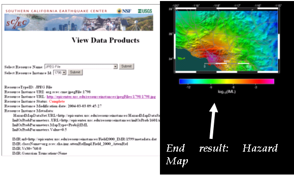

|
|

|
| Information Infrastructure for Earthquake Research | |
Status
Objective: We are developing intelligent reasoners and interfaces that enable users to 1) publish implemented codes of earthquake simulation models and describe model constraints 2) access published simulation models and check constraint violations, and 3) interactively construct computational pathways. We are developing a novel approach to interactive pathway composition that uses knowledge bases to represent and reason about model constraints and planning approaches to reason about the relationships among components within an end-to-end pathway computation. We are also investigating how to model the grid execution environment so that the user can be isolated from the details of the execution of the pathway.
Systems Developed:
- CAT (Composition Analysis Tool): CAT facilitates interactive construction of computational pathways where users select and connect existing SCEC components, and the system generates assistance in completing a correctly formulated pathway. Given a sketch of a pathway, CAT analyzes it using the semantic description of components, reports errors and gaps, and generates specific suggestions on how to fix these errors. When a pathway is completed, it forms an end-to-end simulation for earthquake scientists.
- DOCKER (Distributed Operations of Code with Knowledge-based descriptions for Earthquake Research): DOCKER is a tool that enables model developers to publish the code for their models, describe I/O parameter types in terms of SCEC ontologies, and specify and document constraints of model use. DOCKER helps end users access models from a uniform interface, invoke models correctly by enforcing constraints, and find appropriate simulation models for their requirements.
- Artemis : We have done some preliminary work in using query planning techniques to access metadata catalogs in the grid. Artemis isolates the users from the complexity of using distributed heterogeneous catalogs by providing interactive assistance to formulate valid, integrated queries using a single ontology that is automatically mapped to the particular metadata of each catalog.
CAT Integration with SCEC/IT infrastructure: In Spring 2004, we participated in a successful end-to-end demo of CAT integrated with the SCEC grid workflow execution system. The following shows a SCEC user interface with the results of the execution in the SCEC grid environment of a pathway created with CAT. The left-hand side is a rendering of the knowledge base that represents all the components and abstract component types that the user can include in the pathway. This is based on our Year 1 work on the DOCKER system. 
Recent Work: We are developing CAT-S, a service-based architecture based on CAT that can also be used to check the correctness of a workflow but that can be invoked programmatically from other applications and user interface modalities. Given a specification of a workflow, CAT-S analyzes it using the semantic descriptions of components, reports errors and gaps, and generates specific suggestions on how to fix these errors. CAT-S can be reinvoked with a selection of suggestions, and will fix the workflow accordingly. The interaction can thus proceed stepwise, with each analyze followed by an apply fix call, until the pathway is completed. Our plan is to integrate CAT-S with the Pegasus workflow planning and execution system that has been recently adopted for SCEC.